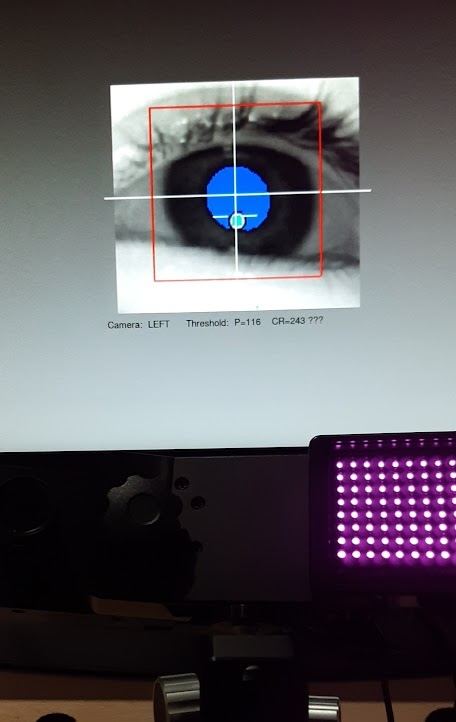
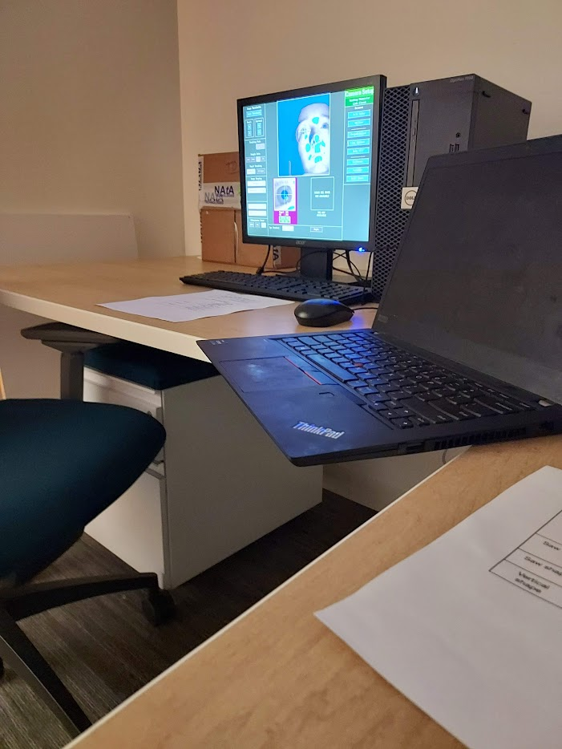

I started out in social science, drawn to understanding people. During college
I worked as a substitute and preschool teacher, supporting children, typically developing and with varying learning disabilities,
in classrooms at Lincoln Public Schools. In tandem, my neuroscience courses sparked an interest in the mystery of how the brain creates
emotion, perception, and cognition. This experiences shaped how I think about research.
I've always cared about what it means for the people on the other end of it.
My path into computational neuroscience was unexpected. As an undergraduate, I joined
Dr. Rachel Dension's
perceptual neuroscience lab contributing to research on the decoupling between objective visual performance and
subjective awareness. These were my first experiences in neuroscience research; I gained hands-on experience with MATLAB,
SPSS and eye-tracking technology. I graduated magna cum laude with a BA in Psychology,
and started asking bigger questions about what computers could do for brain science.
After graduating from Boston University, in order to further pursue my newfound interest in mathematics and computer science, I completed university-level courses in Operating Platforms and Discrete Mathematics at Southern New Hampshire University, as well as IBM-certified courses in DevOps, Cloud Computing, Agile Development, Linux Shell Scripting, and Git and GitHub.


I'm a Clinical Research Coordinator at Boston Children's Hospital's
Laboratory of Translational Neuroimaging (PI: Alexander Li Cohen), where I've spent the past three years building and
deploying software tools for neuroimaging research. My work combines neuroscience and computational methods. At Boston Children's Hospital,
I develop computational tools for fMRI analysis. This has included:
(1) an
intra-volume motion characterization pipeline for populations prone to higher movement, such as children with ADHD and autism
and
(2) a
real-time neurofeedback pipeline for individuals with ADHD, aimed at investigating the feasibility of fMRI neurofeedback as a drug-free,
neuromodulatory treatment for ADHD.
I am constantly inspired by the endless possibilities of what I can create with
computers. Despite starting with no coding experience, working with lab projects that have
required extensive troubleshooting and adjustments has been both rewarding and enjoyable. As such, through my work at BCH,
I have discovered a deep interest in applying tangible, computational methods to answer meaningful questions about
the brain and develop tools with real-world, practical impact.